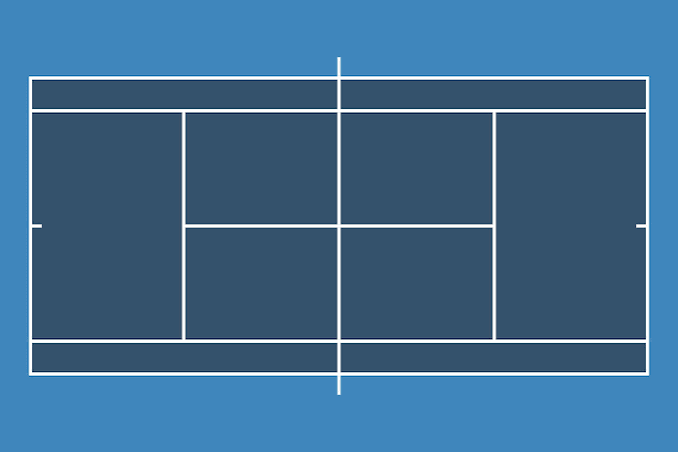

Tennis is the sport that taught me I could start at the bottom and work my way up. Two players, or four in doubles, trade a felt-covered ball over a net, and a point ends when someone can't get it back inside the lines.
I never planned to play. A friend who already played dragged me along, and I just tagged behind. I kept showing up, though, and somewhere along the way it stopped being their thing and became mine.
You don't need much to begin. A racquet, a can of balls, and a court are enough, and plenty of public parks have courts that are free or cheap.
Why I play
Tennis rewards patience as much as power. Every point is a small puzzle, and I've seen proof that effort shows up on the court.
You can start from nothing. I wasn't a natural. I got better because I worked at it, one session at a time.
It wakes up my whole body. Running, stretching, and changing direction in a split second leave me tired in the best way.
It's mine to shape. I choose where to hit, how hard, and how much spin, so no two rallies feel alike.
It's never lonely. I can hit against a wall alone, rally with a friend, or play in a group. It's how I got started, after all.
My story: from tagging along to varsity
The summer I decided to take tennis seriously, I signed up for every bootcamp I could find. Yes, even the ones meant for elementary schoolers. I was the biggest kid in the group, and I didn't care. I wanted the reps, and I wanted to get better.
It paid off. I made varsity. I still think about those early mornings with kids half my size, because that's where it happened. Nobody handed me a spot. I earned it, and that feeling is why I'd tell anyone to pick up a racquet.
How to get started
I wish someone had walked me through this at the beginning. Each step builds on the one before it.
Borrow or buy a racquet. Pick one that's light and comfortable. Don't overthink it.
Learn a basic grip. For forehands, hold it like you're shaking hands with the racquet.
Practice the forehand. Stand near the middle and swing smoothly. Power can wait.
Add the backhand. One hand or two, whichever feels steadier.
Learn to serve. Go slowly at first. Getting the ball in the service box feels like a small victory.
Play mini tennis inside the service boxes with a partner, then move to the full court.
How scoring works
Scoring confused me at first too, so here's the short version. Points go 0 (love), 15, 30, 40. You win a game with at least four points and a two-point lead. At 40 all it's deuce, and you must win two points in a row from there. The first point after deuce is called advantage.
Win six games by a margin of two and you take the set. At six games all, a tiebreak usually decides it. Most matches are best of three sets, and some tournaments go to five.
Try it yourself
Award points to each player and see if you can reach deuce. It's tense even on a screen.
Player A
0
Player B
0
Game in progress. Award a point to either player.
Courts and surfaces

A tennis court from above. The yellow dashed line is the net.
Serves must land in the service box diagonally across the net. Rallies use the whole court, and in singles the inner sidelines mark the boundary.
The surface changes everything. Grass is fast and low, clay is slow and bouncy, and hard courts sit in the middle. Everyone ends up with a favorite.
Surfaces compared
How the three main court surfaces play
Surface
Ball speed
Bounce
Rallies tend to be
Grass
Fast
Low
Short
Clay
Slow
High
Long
Hard
Medium
Medium
In between
Ready to join me?
These groups run lessons, leagues, and tournaments, and they publish the official rules:
USTA is the national governing body in the U.S. Use it to find courts, coaches, and local leagues.
Wimbledon is the oldest tournament in the world, and a great way to watch the sport at its best.
Find a hitting partner
Everyone needs someone to drag them onto the court, just like my friend did for me. Fill out this form to practice sending a request. This is a demo, so nothing is saved or sent.